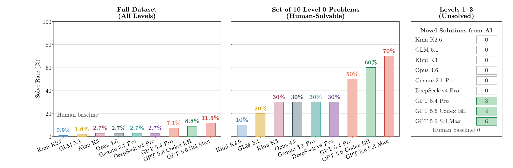

Measuring AI Progress Toward Mathematical Discovery with Automatic Verification
1Stanford University 2Benchmark 3University of Oxford 4Harvard University 5Princeton University 6Ellison Institute of Technology
*Joint-first authors. Correspondence: erikwang@stanford.edu and sumeet.motwani@eng.ox.ac.uk.
Can AI make progress on important, unsolved mathematical problems? We introduce HorizonMath, a benchmark of 113 predominantly unsolved problems across eight domains in mathematics and the mathematical sciences, paired with an open-source evaluation framework. It targets the generator-verifier gap: problems where discovery requires mathematical insight, but candidate answers can be checked by straightforward computation. Unknown solutions make the benchmark resistant to data contamination. Across nine model configurations from seven frontier model families, most score below 10%. We report six distinct research discoveries: GPT-5.4 Pro finds three, and GPT-5.6 Sol Max reproduces these and finds three additional solutions. HorizonMath is an open challenge and growing community resource, where each verified solution is a candidate contribution to the mathematical literature.
The August 2026 paper evaluates a snapshot of 113 problems: 10 solved calibration problems and 103 problems in the unsolved tiers at benchmark assembly. The public dataset continues to grow beyond this evaluated snapshot.
| Level | Description | Count |
|---|---|---|
| 0 | Calibration (solved) | 10 |
| 1 | Likely solvable | 29 |
| 2 | Challenging | 66 |
| 3 | Likely unsolvable | 8 |
| Domain | Count |
|---|---|
| Number Theory | 20 |
| Special Functions | 19 |
| Statistical Mechanics | 15 |
| Discrete Geometry | 15 |
| Combinatorics | 13 |
| Spectral Theory | 12 |
| Continuum Physics | 10 |
| Coding Theory | 9 |
Six distinct discoveries across the unsolved tiers. GPT-5.6 Sol Max leads with 13 accepted solutions out of 113 problems (11.5%), including seven calibration problems and six unsolved-tier problems.

| Model / configuration | Full dataset | Calibration | Unsolved-tier solutions |
|---|---|---|---|
| GPT-5.6 Sol Max | 13/113 (11.5%) | 7/10 (70%) | 6 |
| GPT-5.6 Sol xhigh (Codex) | 10/113 (8.8%) | 6/10 (60%) | 4 |
| GPT-5.4 Pro | 8/113 (7.1%) | 5/10 (50%) | 3 |
| Claude Opus 4.6 | 3/113 (2.7%) | 3/10 (30%) | 0 |
| Gemini 3.1 Pro | 3/113 (2.7%) | 3/10 (30%) | 0 |
| DeepSeek V4 Pro | 3/113 (2.7%) | 3/10 (30%) | 0 |
| Kimi K3 | 3/113 (2.7%) | 3/10 (30%) | 0 |
| GLM 5.1 | 2/113 (1.8%) | 2/10 (20%) | 0 |
| Kimi K2.6 | 1/113 (0.9%) | 1/10 (10%) | 0 |
Evaluations use pass@1. For GPT-5.4 Pro problems with a verified first-attempt solution, one additional query explored further improvements. Counts in the last column overlap across models; they represent six distinct problems, not thirteen separate discoveries.
Improves the exponential base in R(k,k) \le c^{k+o(k)} from approximately 3.7992 to 3.6961, a 2.71% reduction, using a quintic correction and a verified certificate in the Gupta–Ndiaye–Norin–Wei framework.
Reduces union area from approximately 0.1148103 to 0.1091480, a 4.93% improvement over the AlphaEvolve baseline. A deterministic piecewise-linear area calculation validates the construction.
Expresses the integral in terms of gamma values at one quarter and three quarters. The expression matches the numerical reference to 140 digits. This is the third result found by GPT-5.4 Pro and reproduced by GPT-5.6 Sol Max.
GPT-5.6 Sol Max proposes a symbolic expression for a_5 that passes the compliance check and matches the high-precision reference for this Level 2 problem.
One of three additional Level 2 results from GPT-5.6 Sol Max: a symbolic expression that passes the compliance check and matches the high-precision reference.
GPT-5.6 Sol Max also produces an admissible symbolic expression for this Level 2 problem, matching the corresponding high-precision reference.
Models submit self-contained Python functions. The framework executes candidates in a sandbox, checks correctness, and uses an LLM-based compliance checker to screen for forbidden operations.
Compare an admissible symbolic expression against a high-precision reference to \min(20,D) decimal digits, where D is the number of verified reference digits.
Check a construction with a problem-specific validator and require strict improvement over the published baseline.
Check every required property of a proposed object deterministically, with pass/fail scoring and no baseline comparison.
Closed-form answers must use finite expressions built from permitted constants and functions. Numerical quadrature, root-finding, infinite series, and fitted numerical constants are disallowed. The compliance checker is imperfect, so automated evaluation reduces the need for expert review without replacing it.
These examples from Section 5 of the draft cover all three evaluation modes: closed-form discovery, bound improvement, and new construction.
Let K(m) and E(m) be complete elliptic integrals in the parameter convention. Find a closed-form expression for:
The value is approximately 1.77425\ldots. Answers must use permitted symbolic operations without quadrature, infinite series, root-finding, or hard-coded numerical approximations. The draft reports a discovered expression for this benchmark problem.
def proposed_solution():
from mpmath import mp
mp.dps = 100
result = ... # finite symbolic expression
return resultShehadeh, M., Kingsford, W., & Kschischang, F. R. (2026). New Difference Triangle Sets by an FPGA-Based Search Technique. J. Combin. Des., 34(1).
An (n,k)-DTS is an n \times (k+1) array A with entries a_{i,j} such that each row is strictly increasing and normalized:
Define the set of positive within-row differences:
All elements of D must be distinct. The scope is m(A) = \max_{i,j} a_{i,j}. Task: Find a valid (7,5)-DTS with scope strictly less than the current best-known upper bound m(7,5) \le 112.
def proposed_solution():
return {
"n": 7, "k": 5,
"rows": [
[0, a01, a02, a03, a04, a05],
... # 7 rows total
]
}Construct three 10\times10 Latin squares over \{0,1,\ldots,9\}, with each symbol appearing exactly once in every row and column. Every pair of squares must contain each of the 100 ordered pairs exactly once when superimposed.
The validator checks the Latin-square conditions and all three pairwise orthogonality conditions exactly.
def proposed_solution():
# Each L is a 10-by-10 integer array with entries 0 through 9.
return {"squares": [L1, L2, L3]}Comparison as reported in Table 1 of the August 2026 draft.
| Dataset | Problems | Unsolved | Open Eval | Auto-Verify |
|---|---|---|---|---|
| FrontierMath | 300+ | ✗ | ✗ | ✓ |
| FrontierMath: Open Problems | 14 | ✓ | ✗ | ✓ |
| IMProofBench | 39 | ✗ | ✗ | ✗ |
| First Proof | 10 | ✗ | ✗ | ✗ |
| Erdős Problems | 1,000+ | ✓ | ✗ | ✗ |
| IMO-AnswerBench | 400 | ✗ | ✓ | ✓ |
| Optimization Constants | 96 | ✓ | ✗ | ✗ |
| HorizonMath | 113 | ✓ | ✓ | ✓ |
@article{wang2026horizonmathmeasuringaiprogress,
title={HorizonMath: Measuring AI Progress Toward Mathematical Discovery with Automatic Verification},
author={Erik Y. Wang and Sumeet Ramesh Motwani and James V. Roggeveen and Eliot Hodges and Dulhan Jayalath and Charles London and Kalyan Ramakrishnan and Cheng Zhang and Flaviu Cipcigan and Philip Torr and Alessandro Abate},
year={2026},
eprint={2603.15617},
archivePrefix={arXiv},
primaryClass={cs.LG},
url={https://arxiv.org/abs/2603.15617},
}